Euler's intuition (which later proved correct)
From A.O. Gelfond 's classic Transcendental and Algebraic Numbers of Numbers (English translation of Russian original) I quote: The Euler-Hilbert problem. The problem of the transcendence or the rationality of the logarithms, with rational base, of rational numbers, stated by Euler in 1748, was formulated by Hilbert in a significantly more general form and introduced by him as number seven of a set of 23 problems, to the solution of which there appeared to be no suitable approach even at the very end of the nineteenth century... (I take up this topic in greater detail later.)
Euler introduced the concept of a transcendental number (When exactly? Was it done before Euler? Was it Leibnitz? Is there some confusion over the difference between transcendental
function
and transcendental
number
?), but he could
not
prove the transcendence of
even a single
example (one imagines that he must have wondered if (e.g)
 or
e
were transcendental). Euler did however make a wonderful guess (Fel'dman and Shidlovskii - in their monumental 1967
Survey
wrote:
"...we may mention the conjecture made by Euler in 1748 (they give as reference Euler's Introductio in analysin infinitorum, Lausanne 1748, Opera omnia, VIII and IX) on the transcendence of the logarithms to a rational base of rational numbers that are not rational powers of the base."
) at some numbers that he felt could be transcendental (it is an elementary exercise that his candidates are all irrational), as I now explain.
or
e
were transcendental). Euler did however make a wonderful guess (Fel'dman and Shidlovskii - in their monumental 1967
Survey
wrote:
"...we may mention the conjecture made by Euler in 1748 (they give as reference Euler's Introductio in analysin infinitorum, Lausanne 1748, Opera omnia, VIII and IX) on the transcendence of the logarithms to a rational base of rational numbers that are not rational powers of the base."
) at some numbers that he felt could be transcendental (it is an elementary exercise that his candidates are all irrational), as I now explain.
Standard, routine high school problems are to ask:
- Solve the equation 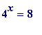 (later vary the pair (4, 8) to e.g: (4, 16), ( 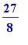 , ), ( 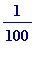 , 10), ... )
- Solve the equation 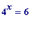 (later vary the pair (4, 6) to e.g: (5, 2), (10, 8), ( 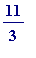 , 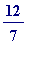 ), ... )
Of course both equations have solutions, meaning:
- there is an ' 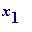 ' such that 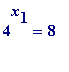
-
there
is
an '
![x[2]](images/transcendental390.gif) ' such that
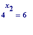
' such that
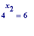
But what
are
the values of
 and
and
 ? School pupils - spotting the obviously related '4' and '8' - should get
to be
, but might get stuck with finding
? School pupils - spotting the obviously related '4' and '8' - should get
to be
, but might get stuck with finding
 . Some might say something like:
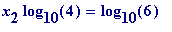
, then - using a calculator - write:
. Some might say something like:
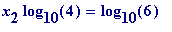
, then - using a calculator - write:
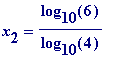 = 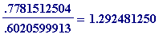 (to 10 places of accuracy)
It is entirely elementary to prove that 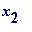 is, in fact, irrational. One might be astounded to know that is actually transcendental.
This is what I believe Euler surmised
: let
 and
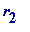
be positive rational numbers such that
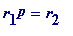
, then
and
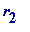
be positive rational numbers such that
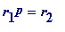
, then
p is rational OR p is transcendental
(Alternatively: the ratio of the logarithms of two rational numbers 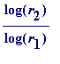 is either rational or transcendental.)
One should sense the remarkable nature of this assertion/guess/conjecture... it is saying/suggesting that such a ratio is either incredibly simple or incredibly complex .
> restart;
>
with(plots): # for 'display'
with(plottools): # for 'line'
p := plot(4^x, x = 0.9..1.6, colour=navy, thickness=2,
title="THE GRAPH OF 4 TO THE POWER x"):
v1 := line([1.5, 0], [1.5, 8], color=red, thickness=2):
alpha := log[10](6.0)/log[10](4.0):
v2 := line([alpha, 0], [alpha, 6], colour=brown, thickness=2):
tp1 := textplot([1.48, 8,`x[1]=3/2`],align=LEFT):
tp2 := textplot([1.51, 8,`y=8`],align=RIGHT):
tp3 := textplot([1.3, 6,`y=6`],align=RIGHT):
tp4 := textplot([1.28, 6.2,`Is x[2]=transcendental?`],align=LEFT):
display([p, v1, v2, tp1, tp2, tp3, tp4]);
Warning, the name changecoords has been redefined
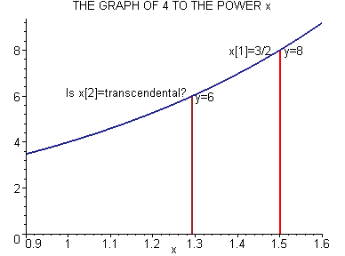
>
Hilbert's seventh problem (later section) is a more general form of Euler's surmise.